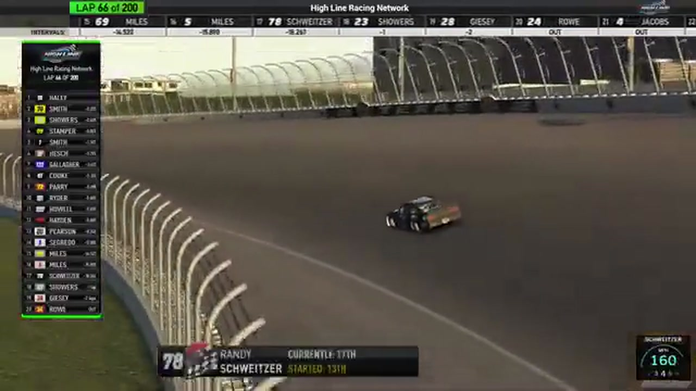

Randy Switzer
Team assignment not stated in the structured owner record.
AN OFFICIAL-TAPE FOOTPRINT, NOT A RESULTS CLAIM
- Official files
- 11
- Central editions
- 0
- Exact tape cues
- 8
- Accepted podiums
- 0
Randy Switzer appears in 11 official HLRN broadcast files across Seasons 1, 2. The current result ledger does not assign this driver a supported top-three finish. A consistently stated team affiliation remains open for owner review. The currently indexed source window runs from November 17, 2025 through July 20, 2026.
The primary chapter index supplies 8 direct jump points. Track not stated is the most frequent named track in the current appearance ledger. The densest direct-tape categories are incident (4 cues) and battle (1 cue). Those counts describe where the name is easiest to find; they are not fault, pace, or performance grades. A source-attributed car frame is published with its original video and timestamp. That is the current discovery map for Randy Switzer.
Official name signals are used for discovery only. They do not become starts, points, incident counts, or an ability grade. This page is deliberately detailed about the tape and restrained about the unavailable competition record. Separately, 6 Highline Live files sit on the bonus shelf and never enter the official season ledger. The displayed name is labeled broadcast lower third confirmed; that status remains visible so an owner roster can strengthen or correct the identity without rewriting the evidence trail. Those boundaries define Randy Switzer's public HLRN file.
8 featured race-tape cues
These are discovery routes into complete HLRN broadcasts, not performance grades or inferred results.
- S1 / R1 · STAGE
Stage 2 winner call at Daytona
S1 / R1 at 1:06:22: The broadcast enters a stage-scoring discussion at Daytona with Zack Cato, Randy Switzer, and Juan Escamilla in the scoring call. The clip preserves the on-air timing or points call without promoting it into a complete stage result; the accepted feature result ledger remains separate.
Daytona - S1 / R11 · BATTLE
The Roval top ten reforms after an unresolved Jacob Brown review
HLRN queues a Jacob Brown replay but cannot find a clear incident and returns live. Nick Bowman leads Trevor Haley, Brandon Showers, and Randy Switzer as the top ten reforms.
Charlotte Roval - S1 / R7 · STRATEGY
Randy Switzer enters the Michigan pit-strategy swing
S1 / R7 at 1:39:01: Pit timing starts to reorganize the field, with Randy Switzer, Trevor Haley, and Shawn Stamper named in the sequence. The clip is a strategy receipt from the primary Michigan broadcast, not a reconstructed scoring sheet.
Michigan - S2 / R4 · INCIDENT
EchoPark's wall contact sweeps Chris James and Randy Switzer into trouble
Several cars go around after contact at the front. Replay shows Chris James in the wall and Randy Switzer hitting the back of the No. 18 before the booth follows the damaged cars through the aftermath.
EchoPark Speedway - S1 / R11 · INCIDENT
Randy Switzer and Ricky Miles damage signals queue during a live battle
HLRN receives separate Randy Switzer and Ricky Miles crash signals but stays live with Joe Quan, Matt Brown, Jacob Brown, and Cory Cook racing for position. The caution arrives later, so the card does not merge the signals into one wreck.
Charlotte Roval - S1 / R9 · INCIDENT
Randy Switzer and Cory Cook surface in the Chicagoland caution replay
S1 / R9 at 1:35:31: The caution sequence centers the replay call on Randy Switzer and Cory Cook. This is a source-bounded incident window; it preserves what the booth reviews without assigning unsupported fault.
Chicagoland - S1 / R7 · INCIDENT
Michigan measures the fallout from its largest wreck
The replay closes on contact involving Michael Jennings, Randy Switzer, Jerry Fassett, and Shawn Stamper. HLRN calls it the biggest wreck of the night before resetting the field for the next restart.
Michigan - S1 / R9 · POSTRACE
Randy Switzer and Juan Escamilla return in the Chicagoland post-race contact review
S1 / R9 at 1:48:52: The reviewed live-race close has passed before this Chicagoland incident booth review begins with Randy Switzer and Juan Escamilla named in the discussion. It remains post-race context, not a new incident, stage, strategy call, finish, or result receipt.
Chicagoland
Verified team history is not consistently stated. No position-specific top-three result is currently accepted. The public spelling has broadcast identity support; an owner roster can still add legal-name, number, and team-history detail.